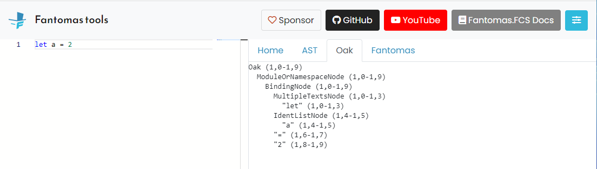

Generating source code
The Fantomas.Core NuGet package can also be used to format code programmatically.
The public API is available from the static CodeFormatter class. It exposes a couple of APIs to format code, one being to format code from a raw syntax tree.
This API assumes the user already parsed a syntax tree or constructed an artificial one.
Key motivation
It can be very tempting to generate some F# code by doing some string concatenations.
In simple scenarios this can work out, but in the long run it doesn't scale well:
- The more code constructs you want to support, the more conditional logic you will need to ensure all edge cases.
- A string is just a string, you cannot guarantee the output will be valid code.
- It is easier to map your domain model to untyped syntax tree nodes and let Fantomas take care of the actual generation of code.
For mercy's sake don't use string concatenation when generating F# code, use Fantomas instead. It is battle tested and proven technology!
Consider using Fabulous.AST
If you're looking to generate F# code programmatically, you might want to check out Fabulous.AST first.
Fabulous.AST provides a more user-friendly DSL built on top of Fantomas Oak AST, dramatically reducing the boilerplate code required to generate F# code.
It offers a concise and easier-to-use API compared to constructing Oak nodes directly, which can be quite verbose.
The rest of this page documents how to work with Fantomas Oak AST directly, which is useful if you need more control or want to understand the underlying structure.
Generating source code from scratch
Example syntax tree
To illustrate the API, lets generate a simple value binding: let a = 0.
#r "../../../artifacts/bin/Fantomas.FCS/release/Fantomas.FCS.dll"
#r "../../../artifacts/bin/Fantomas.Core/release/Fantomas.Core.dll" // In production use #r "nuget: Fantomas.Core, 6.*"
open Fantomas.FCS.Text
open Fantomas.Core.SyntaxOak
let implementationSyntaxTree =
Oak(
[],
[ ModuleOrNamespaceNode(
None,
[ BindingNode(
None,
None,
MultipleTextsNode([ SingleTextNode("let", Range.Zero) ], Range.Zero),
false,
None,
None,
Choice1Of2(IdentListNode([ IdentifierOrDot.Ident(SingleTextNode("a", Range.Zero)) ], Range.Zero)),
None,
[],
None,
SingleTextNode("=", Range.Zero),
Expr.Constant(Constant.FromText(SingleTextNode("0", Range.Zero))),
Range.Zero
)
|> ModuleDecl.TopLevelBinding ],
Range.Zero
) ],
Range.Zero
)
open Fantomas.Core
CodeFormatter.FormatOakAsync(implementationSyntaxTree)
|> Async.RunSynchronously
|> printfn "%s"
|
Constructing the entire syntax tree can be a bit overwhelming at first. There is a lot of information to provide and a lot to unpack if you have never seen any of this before.
Let's deconstruct a couple of things:
Every file has one or more ModuleOrNamespaceNode. In this case the module was anonymous and thus invisible.
Every
ModuleOrNamespaceNodehas top level ModuleDecl.ModuleDecl.TopLevelBinding takes a BindingNode .
The
functionNameof binding contains the name or is a pattern.The
expr(Expr) represents the F# syntax expression.Because there is no actual source code, all ranges will be
Range.Zero.
The more you interact with AST/Oak, the easier you pick up which node represents what.
Fantomas.FCS
When looking at the example, we notice that we've opened Fantomas.FCS.Text.
Fantomas.FCS is a custom version of the F# compiler (built from source) that only exposes the F# parser and the syntax tree.
The key difference is that Fantomas.FCS will most likely contain a more recent version of the F# parser.
You can read the CHANGELOG to see what git commit was used to build Fantomas.FCS.
You can use Fantomas.FCS in your own projects, but be aware that it is not binary compatible with FSharp.Compiler.Service.
Example usage:
open Fantomas.FCS
Parse.parseFile false (SourceText.ofString "let a = 1") []
|
You can format untyped AST created from Fantomas.FCS using the CodeFormatter API.
However, we recommend to use the new Oak model (as in the example) instead.
The Oak model is easier to reason with as it structures certain concepts differently than the untyped AST.
Tips and tricks
Online tool
The syntax tree can have an overwhelming type hierarchy.
We wholeheartedly recommend to use our online tool when working with AST.

This shows you what Oak nodes the parser created for a given input text.
From there on you can use our search bar to find the corresponding documentation:

Match the AST the parser would produce
Fantomas will very selectively use information from the AST to construct the Oak. Please make sure you construct the same Oak as Fantomas would.
// You typically make some helper functions along the way
let text v = SingleTextNode(v, Range.Zero)
let mkCodeFromExpression (e: Expr) =
Oak([], [ ModuleOrNamespaceNode(None, [ ModuleDecl.DeclExpr e ], Range.Zero) ], Range.Zero)
|> CodeFormatter.FormatOakAsync
|> Async.RunSynchronously
|> printfn "%s"
let numberExpr = Expr.Constant(Constant.FromText(text "7"))
let wrappedNumber =
Expr.Paren(ExprParenNode(text "(", numberExpr, text ")", Range.Zero))
mkCodeFromExpression wrappedNumber
|
As a rule of thumb: create what the parser creates, use the online tool!
Just because you can create Oak nodes, does not mean Fantomas will do the right thing.
Look at the Fantomas code base
As mentioned, not every AST node is being used in Fantomas. There are numerous things that do not have any influence on the generation of code.
For example creating SynExpr.Lambda.
When you want to construct fun a b -> a + b, the AST the online tool produces looks like:
Oak (1,0-1,16)
ModuleOrNamespaceNode (1,0-1,16)
ExprLambdaNode (1,0-1,16)
"fun" (1,0-1,3)
PatNamedNode (1,4-1,5)
"a" (1,4-1,5)
PatNamedNode (1,6-1,7)
"b" (1,6-1,7)
"->" (1,8-1,10)
ExprInfixAppNode (1,11-1,16)
"a" (1,11-1,12)
"+" (1,13-1,14)
"b" (1,15-1,16)
let lambdaExpr =
let body: Expr =
ExprInfixAppNode(Expr.Ident(text "a"), text "+", Expr.Ident(text "b"), Range.Zero)
|> Expr.InfixApp
ExprLambdaNode(
text "fun",
[ Pattern.Named(PatNamedNode(None, text "a", Range.Zero))
Pattern.Named(PatNamedNode(None, text "b", Range.Zero)) ],
text "->",
body,
Range.Zero
)
|> Expr.Lambda
mkCodeFromExpression lambdaExpr
|
How to know which nodes to include? Take a look at CodePrinter.fs!
Create your own set of helper functions
Throughout all these examples, we have duplicated a lot of code. You can typically easily refactor this into some helper functions.
The Fantomas maintainers are not affiliated with any projects that expose AST construction helpers.
Updates
Since code generation is considered to be a nice to have functionality, there is no compatibility between any Fantomas.Core version when it comes to the SyntaxOak module.
We do not apply any semantic versioning to Fantomas.FCS or Fantomas.Core.SyntaxOak. Breaking changes can be expected at any given point.
Our recommendation is that you include a set of regression tests to meet your own expectations when upgrading.
As none of our versions are compatible it is advised to take a very strict dependency on Fantomas.Core. Using constraints like (>= 6.0.0) will inevitably lead to unexpected problems.
type Oak = inherit NodeBase new: parsedHashDirectives: ParsedHashDirectiveNode list * modulesOrNamespaces: ModuleOrNamespaceNode list * m: range -> Oak override Children: Node array member ModulesOrNamespaces: ModuleOrNamespaceNode list member ParsedHashDirectives: ParsedHashDirectiveNode list
--------------------
new: parsedHashDirectives: ParsedHashDirectiveNode list * modulesOrNamespaces: ModuleOrNamespaceNode list * m: range -> Oak
type ModuleOrNamespaceNode = inherit NodeBase new: header: ModuleOrNamespaceHeaderNode option * decls: ModuleDecl list * range: range -> ModuleOrNamespaceNode override Children: Node array member Declarations: ModuleDecl list member Header: ModuleOrNamespaceHeaderNode option member IsNamed: bool
--------------------
new: header: ModuleOrNamespaceHeaderNode option * decls: ModuleDecl list * range: range -> ModuleOrNamespaceNode
type BindingNode = inherit NodeBase new: xmlDoc: XmlDocNode option * attributes: MultipleAttributeListNode option * leadingKeyword: MultipleTextsNode * isMutable: bool * inlineNode: SingleTextNode option * accessibility: SingleTextNode option * functionName: Choice<IdentListNode,Pattern> * genericTypeParameters: TyparDecls option * parameters: Pattern list * returnType: BindingReturnInfoNode option * equals: SingleTextNode * expr: Expr * range: range -> BindingNode member Accessibility: SingleTextNode option member Attributes: MultipleAttributeListNode option override Children: Node array member Equals: SingleTextNode member Expr: Expr member FunctionName: Choice<IdentListNode,Pattern> member GenericTypeParameters: TyparDecls option member Inline: SingleTextNode option ...
--------------------
new: xmlDoc: XmlDocNode option * attributes: MultipleAttributeListNode option * leadingKeyword: MultipleTextsNode * isMutable: bool * inlineNode: SingleTextNode option * accessibility: SingleTextNode option * functionName: Choice<IdentListNode,Pattern> * genericTypeParameters: TyparDecls option * parameters: Pattern list * returnType: BindingReturnInfoNode option * equals: SingleTextNode * expr: Expr * range: range -> BindingNode
type MultipleTextsNode = inherit NodeBase new: content: SingleTextNode list * range: range -> MultipleTextsNode override Children: Node array member Content: SingleTextNode list
--------------------
new: content: SingleTextNode list * range: range -> MultipleTextsNode
type SingleTextNode = inherit NodeBase new: idText: string * range: range -> SingleTextNode override Children: Node array member Text: string
--------------------
new: idText: string * range: range -> SingleTextNode
module Range from Fantomas.FCS.Text
--------------------
[<Struct>] type Range = member End: pos member EndColumn: int member EndLine: int member EndRange: range member FileName: string member IsSynthetic: bool member Start: pos member StartColumn: int member StartLine: int member StartRange: range ...
<summary> Represents a range within a file </summary>
<summary> The range where all values are zero </summary>
type IdentListNode = inherit NodeBase new: content: IdentifierOrDot list * range: range -> IdentListNode override Children: Node array member Content: IdentifierOrDot list member IsEmpty: bool static member Empty: IdentListNode
--------------------
new: content: IdentifierOrDot list * range: range -> IdentListNode
<summary> Each case in this DU should have a container node </summary>
static member CodeFormatter.FormatOakAsync: oak: Oak * config: FormatConfig -> Async<string>
module Async from Fantomas.Core
--------------------
type Async = static member AsBeginEnd: computation: ('Arg -> Async<'T>) -> ('Arg * AsyncCallback * obj -> IAsyncResult) * (IAsyncResult -> 'T) * (IAsyncResult -> unit) static member AwaitEvent: event: IEvent<'Del,'T> * ?cancelAction: (unit -> unit) -> Async<'T> (requires delegate and 'Del :> Delegate) static member AwaitIAsyncResult: iar: IAsyncResult * ?millisecondsTimeout: int -> Async<bool> static member AwaitTask: task: Task<'T> -> Async<'T> + 1 overload static member AwaitWaitHandle: waitHandle: WaitHandle * ?millisecondsTimeout: int -> Async<bool> static member CancelDefaultToken: unit -> unit static member Catch: computation: Async<'T> -> Async<Choice<'T,exn>> static member Choice: computations: Async<'T option> seq -> Async<'T option> static member FromBeginEnd: beginAction: (AsyncCallback * obj -> IAsyncResult) * endAction: (IAsyncResult -> 'T) * ?cancelAction: (unit -> unit) -> Async<'T> + 3 overloads static member FromContinuations: callback: (('T -> unit) * (exn -> unit) * (OperationCanceledException -> unit) -> unit) -> Async<'T> ...
--------------------
type Async<'T>
<summary> Functions related to ISourceText objects </summary>
<summary> Creates an ISourceText object from the given string </summary>
type ExprParenNode = inherit NodeBase new: openingParen: SingleTextNode * expr: Expr * closingParen: SingleTextNode * range: range -> ExprParenNode override Children: Node array member ClosingParen: SingleTextNode member Expr: Expr member OpeningParen: SingleTextNode
--------------------
new: openingParen: SingleTextNode * expr: Expr * closingParen: SingleTextNode * range: range -> ExprParenNode
type ExprInfixAppNode = inherit NodeBase interface InfixApp new: lhs: Expr * operator: SingleTextNode * rhs: Expr * range: range -> ExprInfixAppNode override Children: Node array member LeftHandSide: Expr member Operator: SingleTextNode member RightHandSide: Expr
--------------------
new: lhs: Expr * operator: SingleTextNode * rhs: Expr * range: range -> ExprInfixAppNode
type ExprLambdaNode = inherit NodeBase new: funNode: SingleTextNode * parameters: Pattern list * arrow: SingleTextNode * expr: Expr * range: range -> ExprLambdaNode member Arrow: SingleTextNode override Children: Node array member Expr: Expr member Fun: SingleTextNode member Parameters: Pattern list
--------------------
new: funNode: SingleTextNode * parameters: Pattern list * arrow: SingleTextNode * expr: Expr * range: range -> ExprLambdaNode
type PatNamedNode = inherit NodeBase new: accessibility: SingleTextNode option * name: SingleTextNode * range: range -> PatNamedNode member Accessibility: SingleTextNode option override Children: Node array member Name: SingleTextNode
--------------------
new: accessibility: SingleTextNode option * name: SingleTextNode * range: range -> PatNamedNode